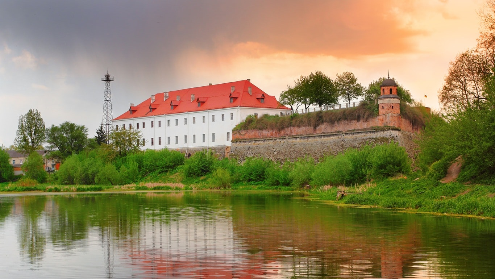

Historyczne miasto na Wołyniu

Dubno to miasto położone w zachodniej części Ukrainy, w obwodzie rówieńskim. Leży nad rzeką Ikwą i należy do najstarszych miast Wołynia. Dzięki swojemu położeniu od wieków było ważnym centrum handlowym oraz administracyjnym regionu.
| Informacja | Dane |
|---|---|
| Państwo | Ukraina |
| Obwód | Rówieński |
| Rzeka | Ikwa |
| Liczba mieszkańców | około 37 000 |
| Pierwsza wzmianka | 1100 rok |
Pierwsza wzmianka o Dubnie pochodzi z 1100 roku. Miasto rozwijało się dzięki korzystnemu położeniu na szlakach handlowych prowadzących przez Wołyń. W XVI wieku Dubno znalazło się w rękach rodu Ostrogskich, którzy przyczynili się do jego rozwoju gospodarczego i kulturalnego.
W czasach Rzeczypospolitej Obojga Narodów odbywały się tutaj słynne jarmarki, przyciągające kupców z wielu krajów Europy. Dubno stało się jednym z najważniejszych ośrodków handlowych regionu.
Miasto przeżyło liczne wojny i zmiany granic państwowych. W XX wieku należało między innymi do Polski, a następnie znalazło się w granicach Związku Radzieckiego. Obecnie jest częścią niepodległej Ukrainy.
Dubno od wieków było miastem wielokulturowym. Mieszkali tutaj Ukraińcy, Polacy, Żydzi, Czesi i przedstawiciele innych narodowości. Dzięki temu miasto posiada bogate dziedzictwo kulturowe oraz architektoniczne.
| Okres | Charakterystyka ludności |
|---|---|
| XVI–XVIII wiek | Rozwój handlu i napływ kupców różnych narodowości. |
| XIX wiek | Wzrost liczby mieszkańców i rozwój gospodarczy. |
| XX wiek | Zmiany związane z wojnami światowymi. |
| Obecnie | Około 37 tysięcy mieszkańców. |